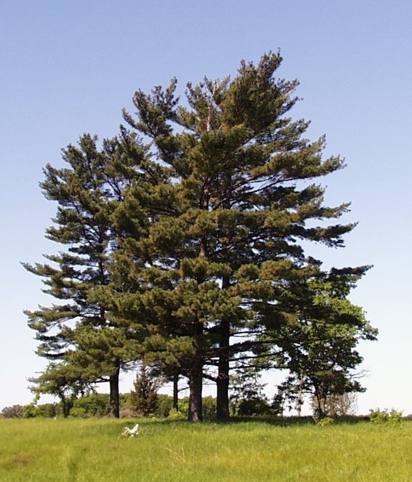

Michigan
Michigan, the Wolverine State, joined the union in 1837. Located in the center of the Great Lakes, Michigan is divided into two landmasses known as the Upper and Lower Peninsulas. The Mackinac Bridge, which connects Michigan’s upper peninsula to the rest of the state, spans five miles and is one of the world’s longest suspension bridges. Detroit, the state’s largest city, is the home of the American auto industry and is the birthplace of Motown Records.
| Date of Statehood | Capital | Population | Size |
|---|---|---|---|
| January 26, 1837 | Lansing | 10.08 million | 96,713 square miles |
Motto
Si quaeris peninsulam amoenam circumspice (“If you seek a pleasant peninsula, look about you”)
Flower
Apple Blossom
Bird
Robin

Tree
White Pine
Interesting facts
- Although the Treaty of Paris granted the Northwest Territories to the United States in 1783, most of the settlers and Native American Indians living in Detroit favored the British, who continued to maintain control. It wasn’t until a coalition of Indian tribes, known as the Western Confederacy, lost the Battle of Fallen Timbers in 1795 that the British finally evacuated in 1796 and the new United States took control.
- In 1874, John Ward Westcott established a marine company to deliver destination and dock information to passing ships by sending messages up a rope on a pail. In 1948, the J.W. Westcott became an official mail boat of the U.S. Postal Service, and later acquired the world’s first floating postal zip code: 48222.
- The first moving automobile assembly line began operations in Henry Ford’s Highland Park plant in 1913, reducing chassis assembly from 12 and one-half hours to 93 minutes within a year.
- The Great Lakes contain more than 80 percent of North America’s—and more than 20 percent of the world’s—surface freshwater supply